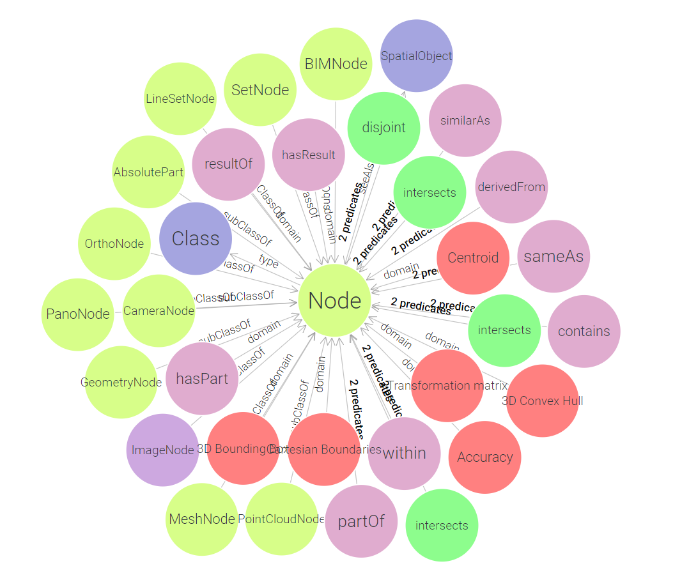
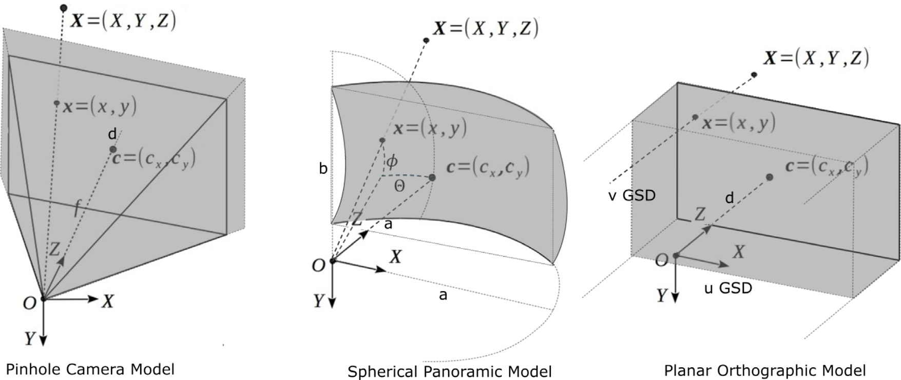

geomapi.nodes.node
Node is an abstract Python Class to govern the data and metadata of remote sensing data (pcd, images, meshes, orthomosaics). It is the base class for all other node classes. It contains the base RDF graph functionality and I/O from and to RDF files.
IMPORTANT: The Node class is an archetype class from which specific data classes (e.g., PointCloudNode) inherit. Do not use this class directly if you can use a child class with more functionality.
Example: Use create_node() with a resource or a graph and it will automatically create the correct node type.
- Goals:
Govern the metadata and geospatial information of big data files in an accessible and lightweight format.
Serialize the metadata of remote sensing and geospatial files (BIM, Point clouds, meshes, etc.) as RDF Graphs.
Attach spatial and temporal analyses through RDF Graph navigation.
- class geomapi.nodes.node.Node(subject: URIRef | None = None, graph: Graph | None = None, graphPath: Path | None = None, name: str | None = None, path: Path | None = None, timestamp: str | None = None, resource=None, cartesianTransform: ndarray | None = None, orientedBoundingBox: open3d.geometry.OrientedBoundingBox | None = None, convexHull: open3d.geometry.TriangleMesh | None = None, loadResource: bool = False, **kwargs)
Bases:
object- __init__(subject: URIRef | None = None, graph: Graph | None = None, graphPath: Path | None = None, name: str | None = None, path: Path | None = None, timestamp: str | None = None, resource=None, cartesianTransform: ndarray | None = None, orientedBoundingBox: open3d.geometry.OrientedBoundingBox | None = None, convexHull: open3d.geometry.TriangleMesh | None = None, loadResource: bool = False, **kwargs)
Creates a Node from one or more of the following inputs.
- Args:
subject (URIRef, optional) : A subject to use as identifier for the Node. If a graph is also present, the subject should be part of the graph.
graph (Graph, optional) : An RDF Graph to parse.
graphPath (Path, optional) : The path of an RDF Graph to parse. If no subject is provided, the first subject of the graph is retained.
name (str, optional) : A name of the Node. This is not a unique identifier but serves as non-functional description.
path (Path, optional) : A filepath to a resource.
timestamp (str, optional) : Timestamp for the node.
resource (optional) : Resource associated with the node.
cartesianTransform (np.ndarray, optional) : The (4x4) transformation matrix.
orientedBoundingBox (o3d.geometry.OrientedBoundingBox, optional) : The oriented bounding box of the node.
convexHull (o3d.geometry.TriangleMesh, optional) : The convex hull of the node.
loadResource (bool, False) : Load the resource at initialization?
- Returns:
Node: An instance of the Node class.
- property path
Path (Path) of the resource of the node.
- Args:
value (str or Path): The new path for the node.
- property name
The name (str) of the node. This can include characters that the operating system does not allow.
- Args:
self.path
self.subject
- property timestamp: str
mm:ss)) of the node.
- Features:
self.path
self.graphPath
- Type:
The timestamp (str(yyyy-MM-ddTHH
- property graphPath: str
The path (Path) of graph of the node. This can be both a local file or a remote URL.
- property graph: Graph
The Graph (RDFLib.Graph) of the node. If no graph is present, you can use get_graph() to parse the graph from a graphPath. Alternatively, you can use to_graph() to serialize the Nodes attributes to RDF.
- property subject: URIRef
The subject (RDFLib.URIRef) of the node. If no subject is present, you can use get_subject() to construct it from a graph, name or path. Otherwise, a random guid is generated.
- Features:
self.name
self.graph
self.path
- property resource
The resource (mesh, image, etc.) of the node. If no resource is present, you can use get_resource(), to load the resource from a path or search it through the name and graphpath.
- Inputs:
self.path
self.name
self.graphPath
- property cartesianTransform: ndarray
The (4x4) transformation matrix of the node containing the translation & rotation. If no matrix is present, you can use get_cartesian_transform(), to gather it from the resource, orientedBoundingBox, or convexHull.
NOTE: The cartesianTransform is specific for every nodeType. For geometry Nodes, it is located at the center of the geometry and the axes are with the world coordinate system. For the image-based Nodes, it is located at the center of the image and the axes are aligned with the image coordinate system (see Figure). The default cartesianTransform is the identity matrix.
ROTATIONS: rotations are (+) counterclockwise and are applied in the following order: z,y,x if no rotation matrix is present.
- Examples:
The pose of a mesh is determined by the average of its bounding vertices.
The pose of an image is at the center of the lens complex.
- Returns:
numpy.ndarray: The (4x4) transformation matrix.
- property orientedBoundingBox: open3d.geometry.OrientedBoundingBox
The o3d.orientedBoundingBox of the Node containing the bounding box of the geometry. If no box is present, you can use get_oriented_bounding_box(), to gather it from the resource, cartesianTransform or convexHull.

- POINTORDER: [[xmin ymin zmin]
[xmax ymin zmin] [xmin ymax zmin] [xmin ymin zmax] [xmax ymax zmax] [xmin ymax zmax] [xmax ymin zmax] [xmax ymax zmin]]
NOTE: The orientedBoundingBox is a 3D box that is aligned with the geometry’s principal axes. It is used to determine the geometry’s position, orientation, and scale.
- Parameters:
center (np.array(3)): The center of the box.
extent (np.array(3)): The length, width, and height of the box.
R (np.array(3x3)): The rotation matrix of the box.
- Features:
LineSetNode, MeshNode, BIMNode, PointCloudNode: The orientedBoundingBox encloses the geometry according to the resource’s principal axes.
ImageNode: The orientedBoundingBox encloses the image centerpoint and it’s 4 corner points projected up to a default distance (20m) from the centerpoint.
OrthomosaicNode: The orientedBoundingBox encloses the 4 corner points of the mosaic projected up and down up to a default distance of (20m)
PanoNode: The orientedBoundingBox the ellipsoide of the panorama projected up to a default distance of (20m) from the centerpoint.
- Inputs:
Open3D.geometry.OrientedBoundingBox
Open3D geometry
set of points (np.array(nx3)) or Vector3dVector
9 parameters $[x,y,z,e_x,e_y,e_z, R_x,R_y,R_z]$
custom parameters are gathered for the ImageNode, OrthomosaicNode, and PanoNode.
- Returns:
o3d.geometry.OrientedBoundingBox: The oriented bounding box of the node.
- property convexHull: open3d.geometry.TriangleMesh
The convex hull of the Node containing the bounding hull of the geometry. If no convex hull is present, you can use get_convex_hull(), to gather it from the resource, cartesianTransform or orientedBoundingBox.
NOTE: The convex hull is a 3D mesh that encloses the geometry. It is used to determine the geometry’s outer shape and volume.
- Parameters:
vertices (np.array): The vertices of the mesh.
triangles (np.array): The triangles of the mesh.
- Features:
LineSetNode, MeshNode, BIMNode, PointCloudNode: The convexHull encloses the geometry according to the resource’s vertices or points.
ImageNode: The convexHull encloses the image centerpoint and it’s 4 corner points projected up to a default distance (20m) from the centerpoint. As such, it has a pyramid shape.
OrthomosaicNode: The convexHull encloses the 4 corner points of the mosaic projected up and down up to a default distance of (20m). As such, it has a boxlike shape.
PanoNode: The convexHull the ellipsoide of the panorama projected up to a default distance of (20m) from the centerpoint. As such, it has a ellipsoid shape.
- Inputs:
Open3D.geometry.TriangleMesh
Open3D geometry
set of points (np.array(nx3)) or Vector3dVector
custom parameters are gathered for the ImageNode, OrthomosaicNode, and PanoNode.
- Returns:
o3d.geometry.TriangleMesh: The convex hull of the node.
- get_center() ndarray
Returns the center of the node.
- load_resource() bool
Load the resource from the path. Overwrite this function for each node type to access more utilities.
- save_resource(directory: str = None, extension: str = '.txt') bool
Export the resource of the Node. this base function checks for the validity of the path. if no directory is given: checks for path and uses that, checks for
- get_graph(graphPath: Path = None, overwrite: bool = True, save: bool = False, base: URIRef = None, serializeAttributes: List = None) Graph
Serializes the object into an RDF graph using only its decorated properties.
NOTE that adding a base URI will change the graph’s subject to the base URI/subject. URIRef(’http://subject’) -> URIRef(’http://node#subject’). This is useful for readability and graph navigation. NOTE that by default, only the pre-defined properties are serialized, if you want to serialize your own attributes use serializeAttributes
- Args:
graphPath (Path) : The path of the graph to parse.
overwrite (bool) : Overwrite the existing graph or not.
base (str | URIRef) : BaseURI to match subjects to in the graph (improves readability) e.g. http://node#. Also, the base URI is used to set the subject of the graph. RDF rules and customs apply so the string must be a valid URI (http:// in front, and # at the end).
save (bool) : Save the graph to the self.graphPath or graphPath.
serializeAttributes (List(str)) : a list of attributes defined in the node that also need to be serialized
- Returns:
Graph: The RDF graph
- save_graph(graphPath: str = None) bool
Serialize the graph in an RDF file on drive. The RDF graph will be stored in self.graphPath or provided graphPath (str).
- Args:
graphPath (str, optional)
- Raises:
ValueError: No valid graphPath if file/folder location is not found
ValueError: No valid extension if not in ut.RDF_EXTENSIONS
ValueError: Save failed despite valid graphPath and extension (serialization error).
- Returns:
bool: True if file is successfully saved.
- transform(transformation: ndarray | None = None, rotation: ndarray | Tuple[float, float, float] | None = None, translation: ndarray | None = None, rotate_around_center: bool = True)
Apply a transformation to the Node’s cartesianTransform, orientedBoundingBox, and convexHull. Subclasses should override this method to transform their specific resource types.
- Args:
transformation (Optional[np.ndarray]): A 4x4 transformation matrix.
rotation (Optional[Union[np.ndarray, np.array[float, float, float]]]): A 3x3 rotation matrix or Euler angles (Rz, Ry, Rx).
translation (Optional[np.ndarray]): A 3-element translation vector.
rotate_around_center (bool): If True, rotate around the object’s center (handled by subclass if needed).
- show()
Creates a visualization of the resource (if loaded)